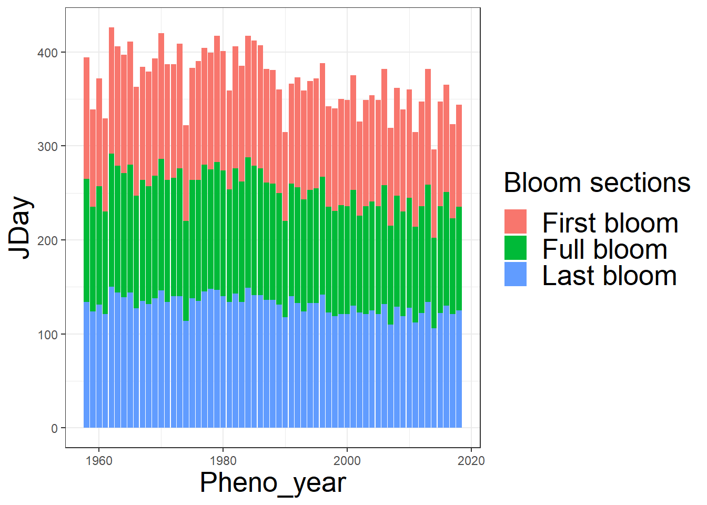
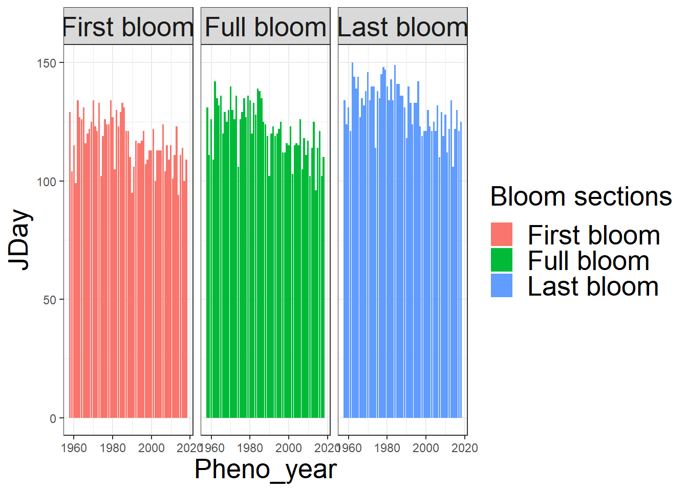
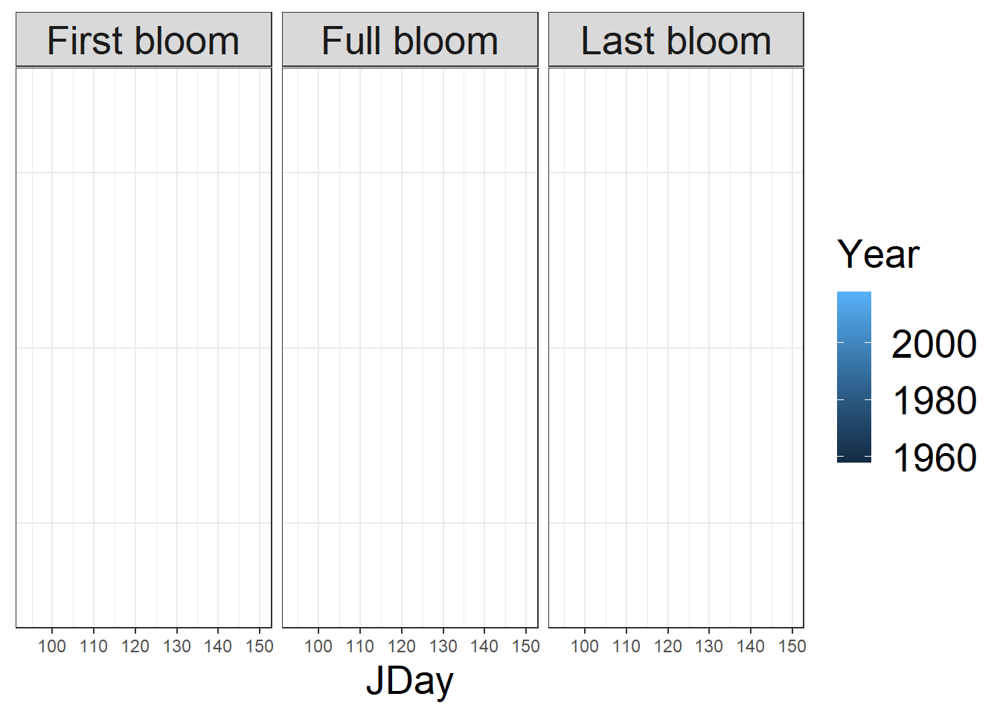
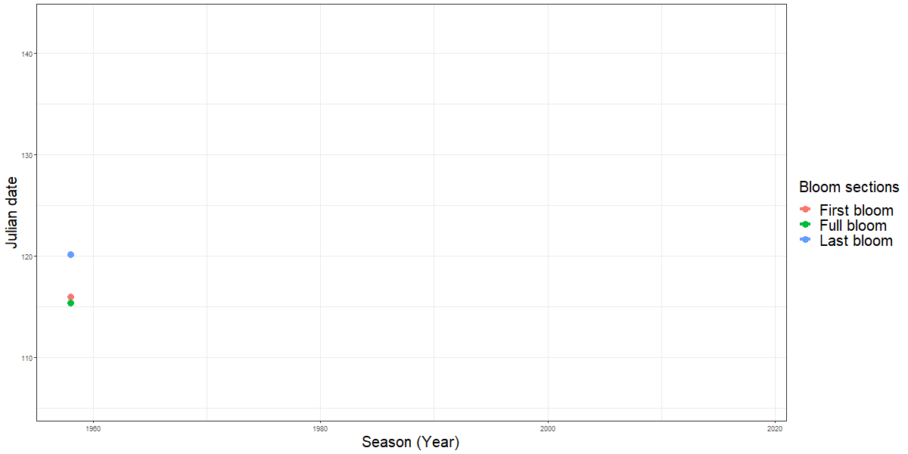
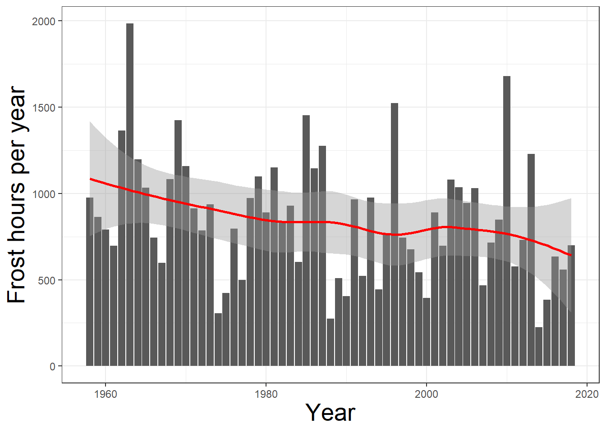
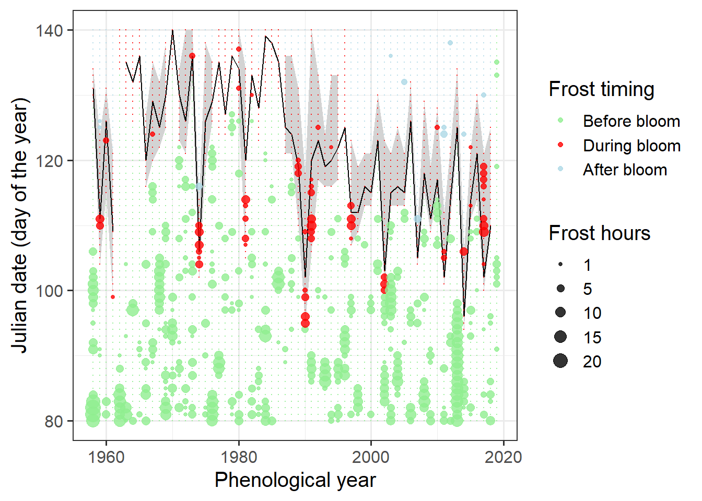
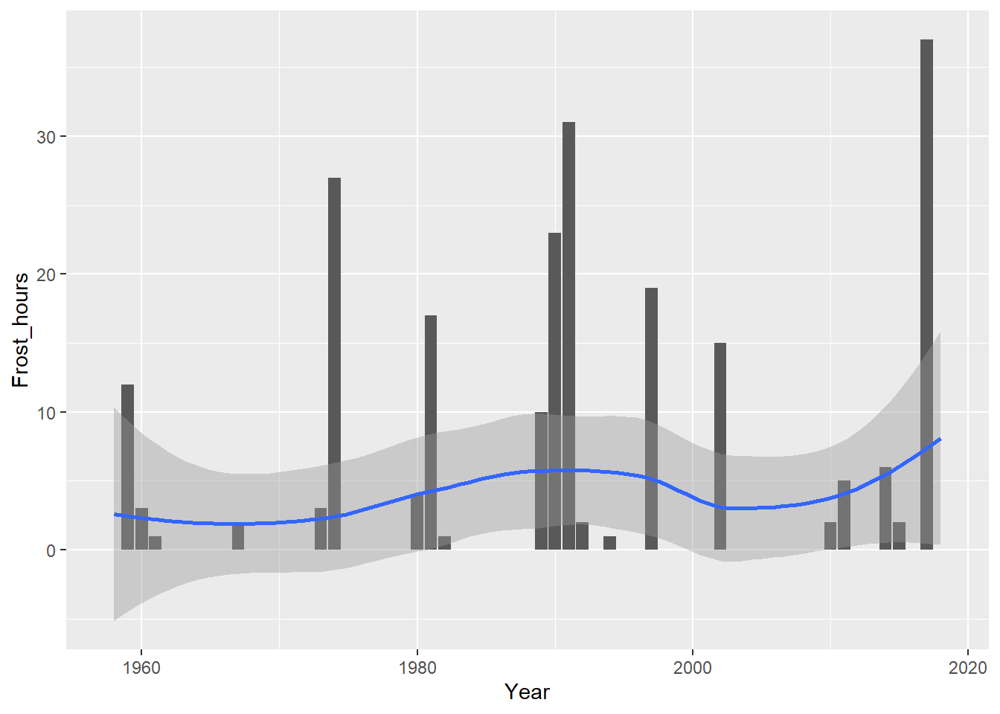

Chapter 29 Frost risk analysis
29.1 Download the phenology dataset for the apple cultivar Roter Boskoop from Klein-Altendorf.
I loaded the files directly from the data directory. I then used the melt() function to shape the data frame for the use with ggplot2.
CKA_Roter_Boskoop<-read.csv("data/Roter_Boskoop_bloom_1958_2019.csv")
CKA_weather<-read.csv("data/TMaxTMin1958-2019_patched.csv")Roter_Boskoop<-melt(CKA_Roter_Boskoop,
id.vars = "Pheno_year",
value.name="YEARMODA")
Roter_Boskoop$Year<-as.numeric(substr(Roter_Boskoop$YEARMODA,1,4))
Roter_Boskoop$Month<-as.numeric(substr(Roter_Boskoop$YEARMODA,5,6))
Roter_Boskoop$Day<-as.numeric(substr(Roter_Boskoop$YEARMODA,7,8))
Roter_Boskoop<-make_JDay(Roter_Boskoop)29.2 Illustrate the development of the bloom period over the duration of the weather record. Use multiple ways to show this - feel free to be creative.
I tried different plot types to visualize the development over the bloom period. To see the development, the year must be represented in the plot in some way. The bar chart give a good overview and also show that the bloom occurs increasingly earlier in the year. I used the facet_wrap() function to split the plot also in its three subparts to also visualize the advance within the flowering.
bloom_sections <- list(
"First_bloom" = "First bloom",
"Full_bloom" = "Full bloom",
"Last_bloom" = "Last bloom"
)
bloom_labeller <- function(variable,value){
return(bloom_sections[value])}
Roter_Boskoop <- Roter_Boskoop[order(nrow(Roter_Boskoop):1),]
RB_phenology <- ggplot(Roter_Boskoop, aes(x = Pheno_year, y = JDay, fill = variable)) +
geom_bar(stat = "identity") +
scale_fill_discrete(name = "Bloom sections", labels=c('First bloom', 'Full bloom', 'Last bloom')) +
theme_bw() +
theme(axis.title.x = element_text(size = 20),
axis.title.y = element_text(size = 20),
legend.title = element_text(size = 20),
legend.text = element_text(size = 20))
RB_phenology
RB_phenology_split <- RB_phenology + facet_wrap(Roter_Boskoop$variable, labeller = bloom_labeller) +
theme_bw() +
theme(axis.title.x = element_text(size = 20),
axis.title.y = element_text(size = 20),
legend.title = element_text(size = 20),
legend.text = element_text(size = 20),
strip.text.x = element_text(size = 20))
RB_phenology_split
The animated point plot shows in a different way how the beginning of flowering moves forward. The color of the dots represents the years, resulting in darker dots for the early years and in lighter dots for the recent years. While the darker dots tend to accumulate at a later time, the lighter dots tend to be earlier.
PG_phenology <- ggplot(Roter_Boskoop, aes(x=JDay, y=variable, fill=Year, color=Year)) +
geom_point(aes(group=Year, size=20)) +
transition_reveal(along=Year) +
facet_wrap(Roter_Boskoop$variable, labeller = bloom_labeller) +
theme_bw() +
theme(axis.title.y=element_blank(),
axis.title.x = element_text(size = 20),
axis.text.y=element_blank(),
axis.ticks.y=element_blank(),
legend.title = element_text(size = 20),
legend.text = element_text(size = 20),
strip.text.x = element_text(size = 20)) +
guides(size = FALSE)
PG_phenology This animated graph is based on a line graph that shows the development of the three different phenology dates. To plot this graph, I applied the runn_mean() function on the data. This reduces the number of extreme values and makes the plot easier to view.
Roter_Boskoop[,"runn_mean_JDay"] <- runn_mean(Roter_Boskoop$JDay,4)
LP_Phenology <- ggplot(Roter_Boskoop, aes(x=Year,
y=runn_mean_JDay,
group=variable,
color=variable)) +
geom_point(size=4) +
geom_line(size=1.5) +
scale_color_discrete(
name="Bloom sections",
labels=c("First bloom", "Full bloom", "Last bloom")) +
xlab("Season (Year)") +
ylab("Julian date") +
theme_bw() +
theme(axis.title.x = element_text(size = 20),
axis.title.y = element_text(size = 20),
legend.title = element_text(size = 20),
legend.text = element_text(size = 20)) +
guides(size = FALSE) +
transition_reveal(Year)
animate(LP_Phenology, height = 600, width =1200)
29.3 Evaluate the occurrence of frost events at Klein-Altendorf since 1958. Illustrate this in a plot.
The graphs illustrates the development of yearly frost hours since 1958. It can be seen that there is a trend towards fewer frost hours. Also the geom_smooth() line shows this trend. To plot this data, we need a function that counts the frost hours in the data. The frost hours are automatically summarized for every year, which simplifies plotting.
frost_df=data.frame(
lower=c(-1000,0),
upper=c(0,1000),
weight=c(1,0))
frost_model<-function(x) step_model(x,frost_df)
hourly<-stack_hourly_temps(CKA_weather,latitude=50.625)
frost<-tempResponse(hourly,models=c(frost=frost_model))
ggplot(frost, aes(End_year,frost)) +
geom_bar(stat = "identity") +
geom_smooth(color="red") +
ylim(c(0,NA)) +
ylab("Frost hours per year") +
xlab("Year") +
theme_bw() +
theme(axis.title.x = element_text(size = 20),
axis.title.y = element_text(size = 20),
legend.title = element_text(size = 20),
legend.text = element_text(size = 20))
29.4 Produce an illustration of the relationship between spring frost events and the bloom period of ‘Roter Boskoop.’
For the next graph, we use the daily amount of frost hours. This can be done with the aggregate() function, so that all days with frost events can be plotted in the next step.
frost_model_no_summ<-function(x) step_model(x, frost_df, summ=FALSE)
hourly$hourtemps[,"frost"]<-frost_model_no_summ(hourly$hourtemps$Temp)
Daily_frost_hours<-aggregate(hourly$hourtemps$frost,
by=list(hourly$hourtemps$YEARMODA),
FUN=sum)
Daily_frost<-make_JDay(CKA_weather)
Daily_frost[,"Frost_hours"]<-Daily_frost_hours$xRibbon_Boskoop<-dcast(
Roter_Boskoop,Pheno_year ~ variable, value.var = "JDay")
lookup_dates<-Ribbon_Boskoop
row.names(lookup_dates)<-lookup_dates$Pheno_year
Daily_frost[,"First_bloom"]<-
lookup_dates[as.character(Daily_frost$Year),"First_bloom"]
Daily_frost[,"Last_bloom"]<-
lookup_dates[as.character(Daily_frost$Year),"Last_bloom"]
Daily_frost[
which(!is.na(Daily_frost$Frost_hours)),"Bloom_frost"]<-
"Before bloom"
Daily_frost[
which(Daily_frost$JDay>=Daily_frost$First_bloom),"Bloom_frost"]<-
"During bloom"
Daily_frost[
which(Daily_frost$JDay>Daily_frost$Last_bloom),"Bloom_frost"]<-
"After bloom"
Daily_frost[
which(Daily_frost$JDay>180),"Bloom_frost"]<-
"Before bloom"
ggplot(data=Ribbon_Boskoop,aes(Pheno_year)) +
geom_ribbon(aes(ymin = First_bloom, ymax = Last_bloom),
fill = "light gray") +
geom_line(aes(y = Full_bloom)) +
theme_bw(base_size=15) +
xlab("Phenological year") +
ylab("Julian date (day of the year)") +
geom_point(data=Daily_frost,
aes(Year,JDay,size=Frost_hours,col=Bloom_frost),
alpha = 0.8) +
scale_size(range = c(0, 5),
breaks = c(1, 5, 10, 15, 20),
labels = c("1", "5", "10", "15", "20"),
name="Frost hours") +
scale_color_manual(
breaks=c("Before bloom", "During bloom", "After bloom"),
values=c("light green","red","light blue"),
name="Frost timing") +
theme_bw(base_size=15) +
ylim(c(80,140))
29.5 Evaluate how the risk of spring frost for this cultivar has changed over time. Has there been a significant trend?
Bloom_frost_trend<-aggregate(
Daily_frost$Frost_hours,
by=list(Daily_frost$Year,Daily_frost$Bloom_frost),
FUN=function(x) sum(x,na.rm=TRUE))
colnames(Bloom_frost_trend)<-c("Year","Frost_timing","Frost_hours")
DuringBloom<-
Bloom_frost_trend[which(Bloom_frost_trend$Frost_timing=="During bloom"),]
ggplot(data=DuringBloom,aes(Year,Frost_hours)) +
geom_col() +
geom_smooth()
Kendall(x=DuringBloom$Year,y=DuringBloom$Frost_hours)## tau = 0.0333, 2-sided pvalue =0.74038Spring frosts are one of the biggest threats to total fruit loss for apple growers. Therefore, any frost during the flowering period should be taken seriously. The graph shows that in the past and also in the most recent years there were always dangerous frost periods. A significant trend cannot be determined with the Kendall test, nevertheless the value tau of 0.03 rather indicates an increase. If we consider that the beginning of flowering is pushed forward by climate change, we can expect more frost during the flowering period in the future. Growers should get early information on regional circumstances and possibilities for frost damage prevention.